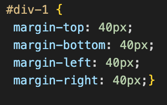

- blog
In CSS, padding is the area between an element's border and its content, whereas a margin is the area surrounding an element's border. Or look at it another way, the padding property controls the interior space of an element, and the margin property controls the area around it. The margin essentially "pushes away" its neighbours.
Padding, on the other hand, is positioned inside an element's border. The padding either increases the size of the element or decreases the size of the content inside to produce this space.
Left example below demonstrates padding in use -- Right example below demonstrates margin in use.
What would you do with margins then? They are employed to reposition elements on the page. For instance, they can reposition an element anywhere on the page, including up, down, left, and right. Additionally, margins can define the separation between adjacent components, so generating whitespace (also known as empty space), which improves the aesthetics of web pages. They can also be used to layer items and give them a staggered appearance.
As shown on example below
CSS padding determines how content looks within its respective element. Adding space between the content and its border is one example. Padding thereby creates whitespace inside your pieces rather than around the outside of them. As you increase the padding, the element's size can also vary. The content will remain the same, but there will be more room around it. When you wish to increase the clickable area for interactive items like buttons, this can be helpful.
The width, line style, and colour of a box's border are determined by the CSS border property. The border-width, border-style, and border-color CSS properties can all be adjusted using this shortcut property.
Such as the hot pink border shown below